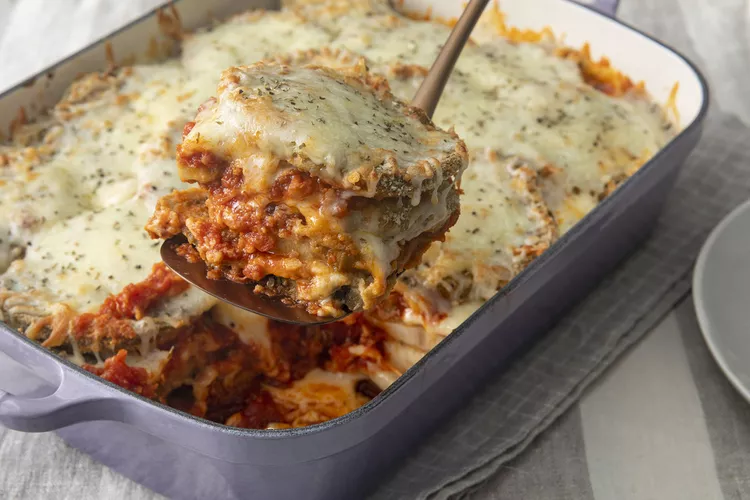

Eggplant Parmesan

Description
Crisp, saucy, and flavorful eggplant Parmesan is just one easy recipe away. You'll find the full recipe below with step-by-step instructions, but here's what you can expect when you make this top-rated recipe;
Begin by preheating your oven to 350 degrees F. Dip sliced eggplant into the beaten egg mixture and seasoned breadcrumbs, then bake for five minutes on each side. Spread spaghetti sauce at the bottom of a 9x13 pan, layering the sauce with cheeses, eggplant slices, and fresh basil.
Ingredients
- 3 large eggplant, peeled and thinly sliced
- 2 large eggs, beaten
- 4 cups Italian seasoned bread crumbs
- 6 cups spaghetti sauce, divided
- 1 (16 ounce) package mozzarella cheese, shredded and divided
- ½ cup grated Parmesan cheese, divided
- ½ teaspoon dried basil
Steps
- Preheat the oven to 350 degrees F (175 degrees C).
- Dip eggplant slices in beaten egg, then in bread crumbs to coat. Place in a single layer on a baking sheet.
- Bake in the preheated oven for 5 minutes. Flip and bake for 5 more minutes.
- Spread spaghetti sauce to cover the bottom of a 9x13-inch baking dish. Place a layer of eggplant slices in the sauce. Sprinkle with mozzarella and Parmesan cheeses. Repeat layers with remaining sauce, eggplant, and cheese, ending with a cheese layer. Sprinkle basil on top.
- Bake in the preheated oven until golden brown, about 35 minutes.